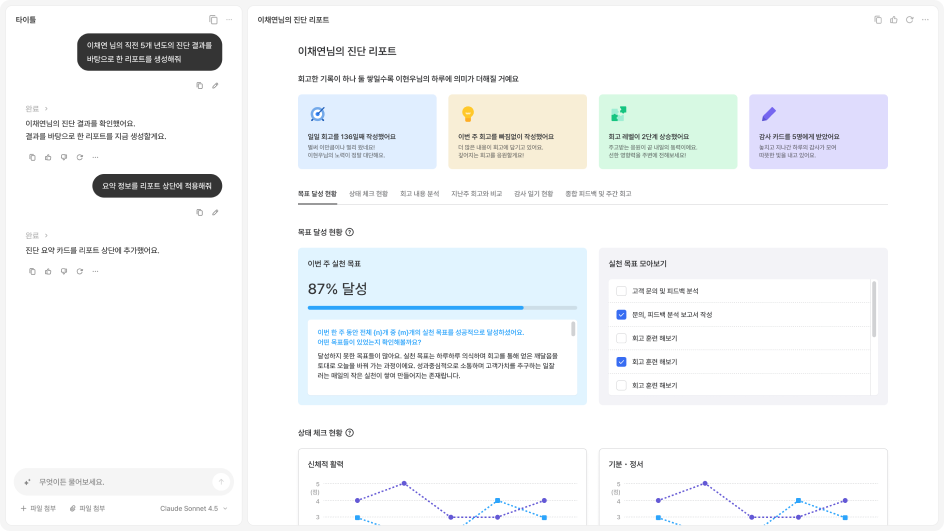
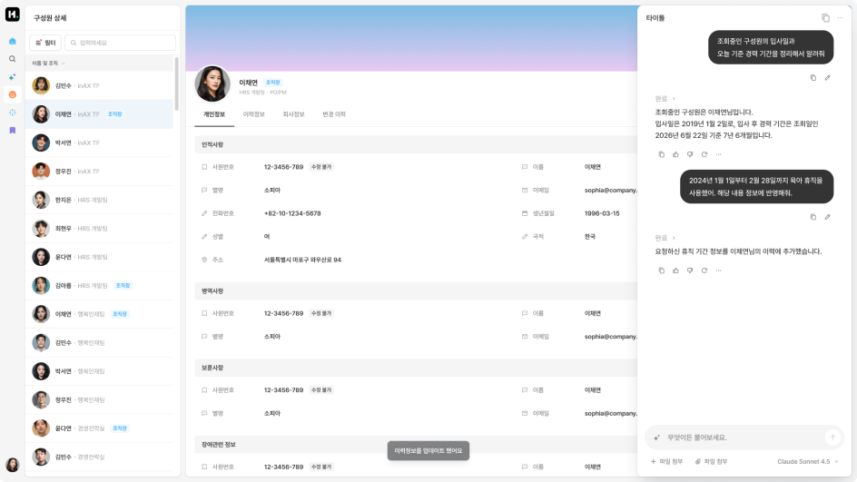
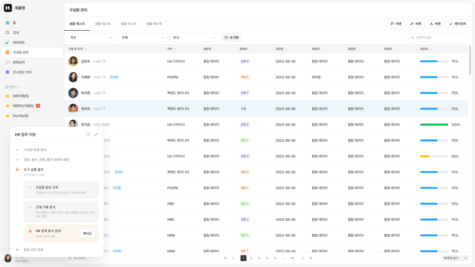
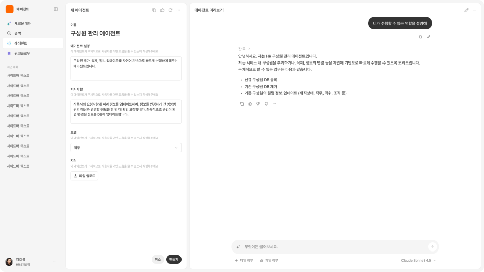

About
AX UI Templates는 AI 에이전트가 제품 안에서 사용자와 만나는 방식을 표준화한 피그마 기반 UI 템플릿 가이드입니다.
만든 사람
이 템플릿은 2026년 5~6월, TGC 멤버들이 AX 기능 설계와 제품 적용 과정에서 반복적으로 등장하는 UI 구조를 정리하며 만들었습니다. 여러 제품에서 공통적으로 필요한 AI 상호작용 패턴을 모으고, 피그마에서 바로 활용할 수 있는 형태로 구성하는 것을 목표로 했습니다. 이후 실제 제품 적용 사례와 신규 요구사항을 반영해 지속적으로 업데이트될 예정입니다.
이선영
김성진
이은비
나수민
김준성
양희윤
개요
P1 Agent Kit은 AI 에이전트가 제품 안에서 사용자와 만나는 방식을 정리한 피그마 기반 UI 템플릿 가이드입니다. AI 기능은 제품과 기능의 성격에 따라 다양한 모습으로 나타납니다. 어떤 경우에는 사용자가 에이전트와 직접 대화하며 결과를 만들고, 어떤 경우에는 현재 화면 안에서 필요한 순간에만 도움을 받습니다. 또 어떤 경우에는 사용자가 작업을 실행한 뒤, 에이전트가 백그라운드에서 처리하고 상태만 확인하면 충분합니다. 이 템플릿은 이러한 다양한 AX 경험을 에이전트 경험의 범위와 밀도를 기준으로 정리합니다. 제품 전반에서 에이전트와 직접 상호작용하는 Agentic 경험, 현재 화면 맥락 안에서 도움을 받는 Contextual 경험, 백그라운드에서 작업이 수행되는 Background 경험, 그리고 에이전트와 워크플로우 자체를 구성하는 Builder 경험으로 나누어 참고할 수 있습니다.




목적
P1 Agent Kit은 기능과 제품에 따라 파편화되기 쉬운 AX 경험을 표준화하기 위한 리소스입니다. 새로운 AX 기능을 만들 때마다 화면 구조와 상호작용 방식을 처음부터 다시 고민하지 않고, 요구사항에 맞는 템플릿을 선택해 빠르게 초안을 구성할 수 있도록 돕습니다. 각 템플릿은 언제 사용해야 하는지, 언제 사용하지 않아야 하는지, 기본 레이아웃은 어떻게 구성되는지, 어떤 하위 UI 분기가 가능한지를 함께 제공합니다. 이를 통해 제품 담당자와 디자이너는 기능의 목적에 맞는 AX UI 유형을 빠르게 판단하고, 일관된 사용자 경험을 유지하면서도 각 제품에 맞게 화면을 확장할 수 있습니다. 이 가이드는 완성된 정답 모음이 아니라, AX 기능 설계를 시작하기 위한 공통 기반입니다. 실제 기능의 성격, 데이터 구조, 사용자 권한, 적용 범위에 따라 템플릿을 조합하거나 일부 요소를 조정해서 사용할 수 있습니다.
사용 방법
피그마 파일에 P1 Agent Kit을 디자인 시스템으로 연결합니다. 이후 만들고자 하는 AX 기능의 성격에 맞는 템플릿 페이지로 이동해, 적합한 컴포넌트 템플릿을 Workspace로 드래그 앤 드롭하여 사용합니다. 각 템플릿은 기본 레이아웃과 주요 UI 블록을 포함하고 있습니다. 사용자는 내부 요소를 swap하거나 옵션을 변경하여 필요한 구성으로 커스터마이징할 수 있습니다. 예를 들어 채팅 입력 영역, 응답 메시지, 컨텍스트 패널, 상태 표시, 액션 버튼, 결과 캔버스 등을 기능 요구사항에 맞게 교체하거나 조합할 수 있습니다. 템플릿을 사용할 때는 먼저 해당 패턴의 선택 기준을 확인하고, 현재 만들려는 기능이 이 유형에 적합한지 판단합니다. 이후 기본 레이아웃 구조를 참고해 화면의 큰 틀을 잡고, 하위 분기와 UI 블록을 조합해 구체적인 화면 초안을 구성합니다. 추가적인 하위 분기, 컴포넌트 프로퍼티, 상태 표현, 실제 제품 사례는 점진적으로 업데이트됩니다. 새로운 AX 기능을 설계하면서 반복적으로 등장하는 패턴이 발견되면, 해당 내용을 템플릿에 반영해 더 안정적인 공통 리소스로 발전시킬 예정입니다.